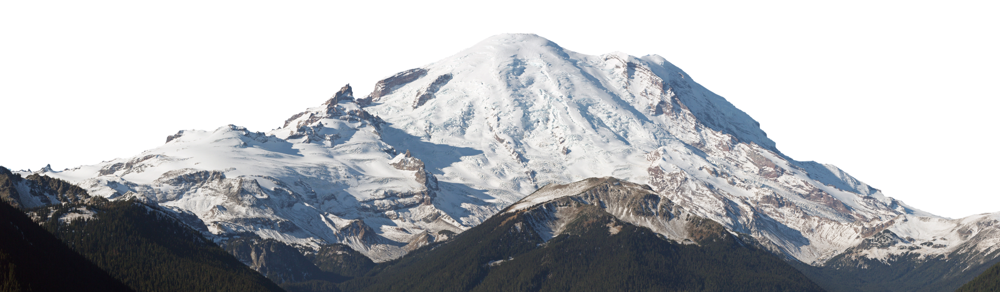

PNG (Portable Network Graphics) is a popular image format known for its lossless compression, which preserves image quality without sacrificing detail. It supports transparency, making it ideal for graphics, logos, and web images where clear backgrounds are needed. Unlike JPEG, PNG is better suited for images with sharp edges and text, ensuring crisp visuals and vibrant colors.
I was grew up in the mountains and Himalayas, So I picked this image as a sample one.
To go back to Main page Click here